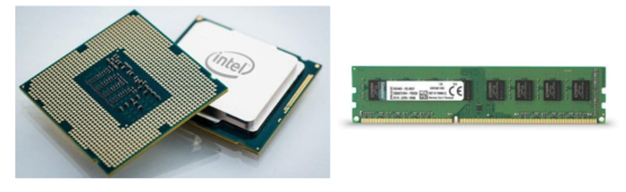

1.2.2.1 Manejo de Memoria
Es un dispositivo que puede mantenerse en por lo menos dos
estados estables por un cierto periodo de tiempo.
Cada uno de estos estados estables puede utilizarse para
representar un bit.
A un dispositivo con la capacidad de almacenar por lo menos
un bit se le conoce como celda básica de memoria.
Un dispositivo de memoria completo se forma con varias
celdas básicas y los circuitos asociados para poder leer y
escribir dichas celdas básicas, agrupadas como localidades
de memoria que permitan almacenar un grupo de N bits.
El número de bits que puede almacenar cada localidad de
memoria es conocido como el ancho de palabra de la
memoria. Coincide con el ancho del bus de datos.
Uno de los circuitos auxiliares que integran la memoria es el
decodificador de direcciones. Su función es la de activar a
las celdas básicas que van a ser leídas o escritas a partir de la
dirección presente en el bus de direcciones. Tiene como entradas las N líneas del bus de direcciones y 2N líneas de
habilitación de localidad, cada una correspondiente a una
combinación binaria distinta de los bits de direcciones.
Por lo tanto, el número de localidades de memoria
disponibles en un dispositivo (T) se relaciona con el número
de líneas de dirección N por T= 2N.
Conceptos básicos del manejo de la memoria.
Se produce bajo el control directo y continuo del programa
que solicita la operación de E/S. tanto en la entrada y salida
programada como con interrupciones, el procesador es
responsable de extraer los datos de la memoria en una salida,
y almacenar los datos en la memoria principal. El problema
con la E/S es que el procesador tiene que esperar un tiempo
considerable hasta que el modulo en cuestión esté preparado
para recibir o transmitir datos.
